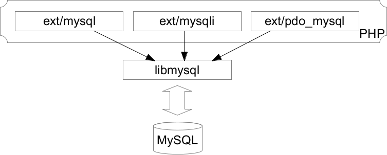
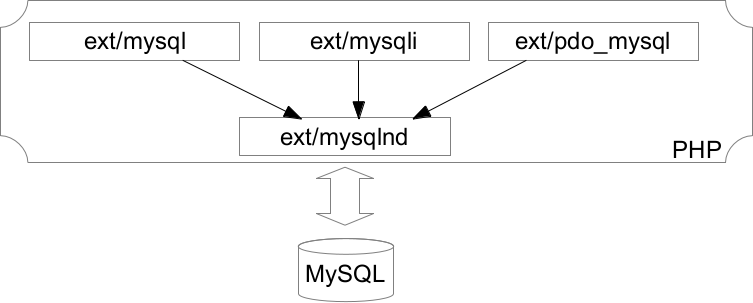
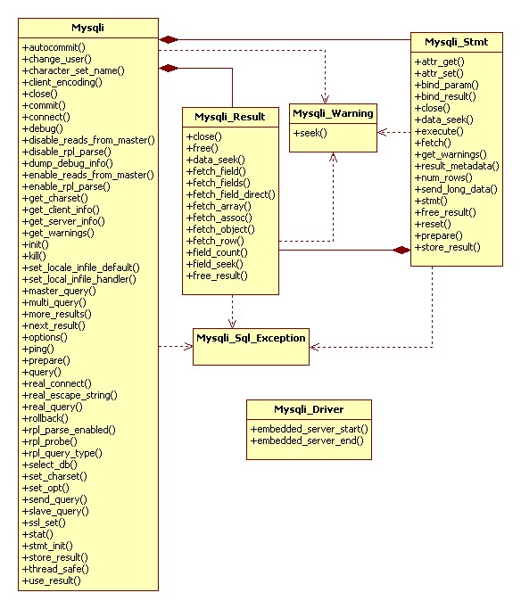

Jul 21st, 2014
Introduction#
Appeared with PHP5.3, mysqlnd is an unknown part of PHP. Yet, this extension is a must-have if your system relies heavily on the MySQL database server. We'll see what mysqlnd is, what it brings to PHP and how to use it.
Foresee#
PHP communicates with MySQL through a connector. 2 of them exist : libmysql or mysqlnd. libmysql is licenced by Oracle, while mysqlnd is under the PHP licence. Both code bases are mostly maintained by Oracle employees. If a user wants to communicate with MySQL using the PHP language, this latter publishes 3 APIs in this goal : ext/mysql, ext/mysqli and ext/pdo_mysql.

Connectors#
libmysql#
Historicaly, PHP needed the MySQL server C connector to be able to talk with it. This connector is also known as "libmysql", and may be installed on your system with a command like apt-get install libmysql. This connector implements the MySQL communication API, let's see an example :
#include
#include
#include
#include "mysql_example.h" /* Pour MYSQL_HOST, MYSQL_USER, MYSQL_PASS */
int main(int argv, char *argc[])
{
MYSQL_RES *results = NULL; MYSQL_ROW row; MYSQL *db = NULL;
db = (MYSQL *)malloc(sizeof(MYSQL));
mysql_init(db);
mysql_options(db, MYSQL_INIT_COMMAND, "SET NAMES UTF8;");
if(!mysql_real_connect(db, MYSQL_HOST, MYSQL_USER, MYSQL_PASS, NULL, 0, NULL, 0)) {
fprintf(stderr, "Failed to connect to host %s (%s)", MYSQL_HOST, mysql_error(db));
exit(EXIT_FAILURE);
}
mysql_set_character_set(db, "utf8");
mysql_select_db(db, "my_database");
mysql_query(db , "SELECT user_id AS id FROM users WHERE user_description='member' LIMIT 10000");
results = mysql_use_result(db);
while(row = mysql_fetch_row(results)) {
printf("%s\n", row[0]);
}
mysql_free_result(results);
exit(EXIT_SUCCESS);
} You can run this code by linking your binary with libmysql, GCC's switch "-lmysql". The libmysql documentation is detailed, and online, at http://dev.mysql.com/doc/refman/5.0/en/c-api.html
As you could have noticed, the PHP extensions "mysql" and "mysqli" borrow this C API to publish it to PHP land. This is one of the PHP way of doing things : when an extension creator embeds a C API into PHP's source to publish it to PHP user land, usually he gives it the same API as the C one, this way when you know one of them, you are not lost getting hands into the second one.
libmysql however could bring some problems to your architecture :
- The licencing is complex. For example, if you wish to build a closed-source commercial product on top of libmysql, you'll need to pay for a licence. Details about libmysql licencing here.
- Updating libmysql involves updating the MySQL server in certain distros, which sometimes is not what you want in your upgrading strategies.
mysqlnd#
As of PHP5.3, the PHP developers rewrote entirely the libmysql source code, into a PHP extension named "mysqlnd". mysql native driver. This connector is licenced under the PHP licence, which is more appropriate than the Oracle's licences as all stay under the same PHP licence.
Also, rewriting the code of a library that was not part of PHP (libmysql) was also the way to improve many things in the MySQL-PHP communication. We'll detail how mysqlnd can improve your application performance drastically, especially if this one runs big select queries (batch scripts are the appropriate use case here).
Just keep in mind that mysqlnd is a PHP extension that does not publish any class or function to PHP (this in not totally right, we'll get back to that point later on), it however can serve as a big basis for other PHP extensions mysql,mysqli and pdo_mysql to rely on when communicating with MySQL servers.
mysqlnd is to be activated at compile time in PHP 5.3 (--with-pdo-mysql=mysqlnd switch, for pdo_mysql example), and it is proposed as the default connector starting from PHP 5.4.
Extensions#
PHP publishes 3 extensions for the PHP user to talk to MySQL servers.
mysql#
This very old extension was the first one published. It was contributed by the MySQL authors back before year 2000. It publishes the mysql_ functions in PHP by adopting the underlying C API. This extension borrows the MySQL server 3.23 API, so for today, it is not to be used as it is too old. It's still here for compatibility purposes, throws E_DEPRECATED errors in latest PHP versions and is meant to die sooner or later. Please, don't use it for your recent projects.
mysqli#
mysqli is written with an end "i" which stands for "improved". This extension appeared in PHP5.0, and is meant to replace the old ext/mysql API, because it is internally based or more recent MySQL server API : 4.1 or later. It then supports stored procedure, secured authentification protocol, prepared statements and much more. It also publishes an object oriented API to the PHP user, together with a procedural API.
PHP contributors designed this extension so that it has a very common API shared with ext/mysql, and migrations from ext/mysql to ext/mysqli should really be painless.
We'll detail ext/mysqli API in a few moment to introduce not well understood but critical concepts such as buffered/unbuffered queries and prepared statements.
PDO#
PDO is different from mysql/mysqli because it has been designed to support other RDBMS than MySQL. In this fact, this extension is imperfect and tries to guess many things from the user, which could lead to strange behaviors. Let me explain.
PDO ships with an SQL parser which is to emulate prepared statements if the underlying RDBMS doesn't support them. The problem is that this layer behaves differently from the RDBMS' one, when present. If you take the MySQL case, the PDO emulation layer is active by default when you prepare a query, and this one will never hit MySQL prepared statement layer which is probably not what you want. In fact, PDO's code will parse and build your query, never communicating with MySQL about this (by default). This is weird. Turn this emulation layer off as soon as you can :
/* Disable PDO prepared statements emulation */
$pdo->setAttribute(PDO::ATTR_EMULATE_PREPARES, 0);
/* This is exactly the same, take care, we really pass 0 here and not 1 */
$pdo->setAttribute(PDO::MYSQL_ATTR_DIRECT_QUERY, 0);When the emulation layer is disabled, you rely with a true prepared statement. When it is enabled, PDO will take care of constructing the query for you, and will send a traditionnal normal query to the RDBMS. This has lots of drawbacks and can lead to strange behaviors. As PDO doesn't know anything about tables' columns, its emulation layer will quote every parameter when bound to an emulated prepared statement, even the parameter of integer type, which don't need such quoting. This leads to errors :
$stmt = $pdo->prepare("SELECT user_id FROM users LIMIT :limit");
$stmt->bindValue('limit', 10);
$stmt->execute();
$result = $stmt->fetch();
var_dump($result);
/*
PHP Fatal error: Uncaught exception 'PDOException' with message 'SQLSTATE[42000]: Syntax error or access violation: 1064 You have an error in your SQL syntax;
check the manual that corresponds to your MySQL server version for the right syntax to use near ''10''
*/We see from this error message that PDO escaped my 'limit' parameter quoting it wrongly, as it is an integer and doesn't need that. Let's try again with no emulation layer, relying only on the RDBMS layer (MySQL here):
$pdo->setAttribute(PDO::ATTR_EMULATE_PREPARES, 0); /* Disable prepared statement emulation layer */
$stmt = $pdo->prepare("SELECT user_id FROM users LIMIT :limit"); /* A true prepare() will be sent to the RDBMS, it has to support it */
$stmt->bindValue('limit', 10);
$stmt->execute();
$result = $stmt->fetch();
var_dump($result);
/*
array(4) {
["user_id"]=>
string(7) "18"
[0]=>
string(7) "18"
}
*/Things now work. If you would want to still use the emulation layer, you'd then need to precise to PDO that your parameter is of type integer, like this :
/* Tells the PDO prepared statement emulation layer that this column is of type integer (SQL type) */
$stmt->bindValue('limit', 10, PDO::PARAM_INT);And here you don't have the whole story.
Whereas we explicitely disabled the prepared statement emulation layer in PDO, this one is still a little active. The layer is still triggered for parameter parsing. You know about the two parameter syntax : anonymous parameters, implemented as "?" in your query for placeholders, or the named parameters, as ":myparam". Those two syntaxes are not supported by every RDBMS, and guess what ? MySQL doesn't support the named parameters one, only the question-mark-based one. However, our preceding query still completed fine... This is because the PDO query analyzer is still active, even with prepared statement emulation layer tured off. It stepped in and replaced every named parameter by an anonymous one, because it asked the RDBMS (MySQL here) about its capabilities to support those syntaxes, and MySQL answered it did not support the named parameters syntax. PDO then replaced every ":myparamname" by a "?". Tricky isn't it ?
By trying to satisfy every soul on earth, PDO created an API that is full of trade-offs. It is in fact well designed, and eases the PHP developers life in a huge majority of cases, but hidding complexity is a double-edged sword. If you hit the bogus case, your are then in trouble if you don't know what happens in the lower layers.
Zoom on the mysqli extension#
mysqli is a nice extension, really. Nowadays, everybody uses PDO, the main argument about this is if you were to switch from one RDBMS to an other, this would ease many things. I don't know you, but I've never met such a situation. If you use MySQL RDBMS, and you are pretty unlikely to change (in production), which usually is the case : don't use PDO, you'll lose many things and suffer from one more layer of abstraction which can't offer everything the RDBMS can offer. Have a look at mysqli API and notice how rich it is :

First of all, mysqli has always been blamed for not generating exceptions but PHP errors. This is wrong.
mysqli_report(MYSQLI_REPORT_ERROR | MYSQLI_REPORT_STRICT);
try {
$db = mysqli_connect('myserver', 'myuser', 'secret', 'unknown_database');
} catch (mysqli_sql_exception $e) {
exit($e->getMessage());
}
try {
mysqli_query($db, "SELECT foo FROM bar");
/* ... */
} catch(mysqli_sql_exception $e) { }You see ?
mysqli can even tell you when you miss an index :
mysqli_report(MYSQLI_REPORT_INDEX);
$db = mysqli_connect('myserver', 'myuser', 'secret', 'my_database');
mysqli_query($db, "SELECT photo FROM Users WHERE source ='web' LIMIT 1000");
/* PHP Warning: mysqli_query(): (00000/0): No index used in query/prepared statement ... */MySQL communicates many things with its client (PHP in our case). For more information, you should read the MySQL client/server protocol documentation
Second thing : mysqli provides a function to change the character set : mysqli_set_character_name(). You should never use "SET NAMES" query, because the escaping strategies won't use it.
You can read more info about this at http://php.net/mysqlinfo.concepts.charset.php or http://dev.mysql.com/doc/refman/5.7/en/charset-connection.html
Now, let's talk about buffered queries, which is a very obscur part. When you query MySQL for results, so usually when you use SELECT queries, a resultset will be created and results will be in. Buffered resultsets is the concept about where to store the resultset ? Should it be stored into the client memory (buffered query), or stay on the MySQL side (unbuffered query) ? That's all.
Please, note that we are talking about direct queries and not prepared statements, which are not the same at all. We'll give a word about prepared statements later on.
By default, every direct query issued from mysqli to MySQL is buffered, this means that at the time you issue a mysqli_query() call, all the resultset is transmitted over the wire, back to PHP memory, and freed from the MySQL side. As the resultset resides on the PHP part, you can count it : mysqli_num_rows(), you can seek into it at any place : mysqli_data_seek() and you can issue another query() while the resultset is not freed yet. Let's show an example :
$mysqli = mysqli_connect(/*...*/);
/* By default, the resultset will be buffered into the client : PHP */
$result = mysqli_query($mysqli, "SELECT id, nom, email FROM members");
$line1 = mysqli_fetch_row($result);
mysqli_data_seek($result, mysqli_num_rows($result)); /* Let's jump to the last result */
$last_result = mysqli_fetch_row($result); /* Let's fetch that last result */
/* Should we not need this resultset anymore, let's free it, which will free memory :*/
mysqli_free_result($result);This is classical and default case. Remember that the whole resultset is immediately transmitted by MySQL to PHP, so if you expect it to be big, like if you selected very large blob columns or a lot of results, PHP's memory footprint will increase proportionally. However, you will not be able to see this memory footprint using memory_get_usage() nor will it be accounted into memory_limit until you use mysqlnd as low level connector. We'll detail this later.
If you'd like to issue the same request using non buffered result set, you'll use the MYSQLI_USE_RESULT flag. But be carefull, if you use a non buffered resultset, this means that the resultset will be allocated on the MySQL side (into the MySQL process memory) for your connection, and MySQL can only store one resultset by connection, which means you won't be able to re-issue another direct query on this connection until you freed the resultset. Also, as the resultset is not stored on the PHP side, it is not possible you seek into it, nor you count how many results are in :
$mysqli = mysqli_connect(/*...*/);
/* The resultset will be allocated on the MySQL side this time */
$result = mysqli_query($mysqli, "SELECT id, email FROM members", MYSQLI_USE_RESULT);
$line1 = mysqli_fetch_row($result); /* This may trigger the network to fetch a result from the resultset */
/* This leads to an error, you cant seek a resultset which is not "yours",
it is still located into MySQL memory */
mysqli_data_seek($result, mysqli_num_rows($result));
/* This leads to an error, you can't issue another unbuffered query if you did not
free the last resultset */
$result2 = mysqli_query($mysqli, "SELECT name FROM membres", MYSQLI_USE_RESULT);mysqli_free_result() frees the resultset, should it be stored on the PHP side or MySQL side.
By default, any direct query is issued in buffered mode because the MySQL server has other things to do than allocating memory to store every of its clients' resultsets.
Now, let's talk about prepared statements.
Prepared statements are very different from traditionnal direct queries :
- Prepared statements don't use the same underlying protocol as direct queries. The protocol is called the binary protocol, it is very optimized and offers many things such as true data type bindings.
- Prepared statements resultsets are not buffered by default. This is the opposite as direct queries resultsets.
Let's start by dumping the protocol for a direct query :
$m = mysqli_connect(/* params */);
$q = mysqli_query($m, 'SELECT * FROM Users LIMIT 1');
while($r = mysqli_fetch_row($q)) {
/* do something */
}
mysqli_free_result($r);As you can see on the picture, this is a textual protocol, this means that the data that MySQL sends back to PHP is only text. You asked for an integer column in your query ? you'll be given some text. Ouch ! That first means that MySQL has some additionnal work to do to turn the data types from its columns into texts. And that also means that on the PHP side, you'll only be able to retrieve PHP strings, even if your asked columns store different types.
Here we go for the same query as prepared statement :
$m = mysqli_connect(/* params */);
$ps = mysqli_prepare($m, 'SELECT * FROM Users LIMIT 1');
mysqli_stmt_execute($ps);
while(mysqli_stmt_fetch($ps)) {
/* */
}
mysqli_stmt_close($ps);The protocol image shows that this time, there are more communications. Every bind (not done on our example) and every fetch will trigger MySQL to receive or transmit data on the wire. However, we can't see that on the picture but the protocol used was binary, that means that every column type is respected and transmetted as-is : an integer will be sent as an integer, and not a string anymore. Should you remember your type sizes, transmitting for example a TINYINT 200 will weigh one byte on the network whereas it would have used 4 bytes if turned to text. The binary protocol is then lighter from this point of view, but there are also more network interchange for signaling.
$m = mysqli_connect(/* params */);
$ps = mysqli_prepare($m, 'SELECT id FROM Users LIMIT 10'); /* 'id 'column is of type INTEGER */
mysqli_stmt_execute($ps);
mysqli_stmt_bind_result($ps, $id); /* let's bind the result column on $id */
while(mysqli_stmt_fetch($ps)) {
var_dump($id);
}
/*
int(62)
int(64)
*/The example above shows clearly that PHP recovers integers, not strings any more.
It is however possible to keep types using the text protocol. This will need the client (PHP) to transtype the received strings ito the right expected types, and as you'd have guessed, only mysqlnd can do that, libmysql will be no help :
$m = mysqli_connect(/* */);
$q = mysqli_query($m, 'SELECT id FROM users LIMIT 10';
while($r = mysqli_fetch_row($q)) {
var_dump($r[0]);
}
/*
string(2) "62"
string(2) "64"
*/
$m = mysqli_connect(/* */);
mysqli_options($m, MYSQLI_OPT_INT_AND_FLOAT_NATIVE, true); /* This is only available using mysqlnd */
$q = mysqli_query($m, 'SELECT id FROM users LIMIT 10');
while($r = mysqli_fetch_row($q)) {
var_dump($r[0]);
}
/*
int(62)
int(64)
*/If we talk about the resultset of a prepared statement, it is not buffered by default, every fetch() operation will trigger a network communication. You may however buffer those resultsets, using mysqli_stmt_store_result().
$m = mysqli_connect(/* */);
$ps = mysqli_prepare($m, 'SELECT id, name FROM Users LIMIT 1000');
mysqli_stmt_execute($ps);
mysqli_stmt_bind_result($ps, $id, $name);
/* Store every result into PHP in one call */
mysqli_stmt_store_result($ps);
while(mysqli_stmt_fetch($ps)) {
/* do something with $id and $name */
}
mysqli_stmt_close($ps);We've seen we still can buffer the resultset if we want to, but with prepared statements it is necessary to bind every result column to a PHP variable to be able to read some useful data.
Once more, if you use mysqlnd, you'll have access to mysqli_stmt_get_result(), which will turn a prepared statement resultset into a mysqli_result, and you'll be back using a direct-query-like API, but with prepared statements :
$m = mysqli_connect(/* params */);
$ps = mysqli_prepare($m, 'SELECT id, name FROM Users LIMIT 1000');
mysqli_stmt_execute($ps);
/* Turn the result set into a mysqli_result */
$r = mysqli_stmt_get_result($ps); /* Only available under mysqlnd */
while($result = mysqli_fetch_row($r)) { /* direct query API */
/* do something */
}
mysqli_free_result($r);
mysqli_stmt_close($ps);Zoom on mysqlnd#
We've seen so far that mysqlnd acts as a hidden extension which adds many features to the existing APIs, especially mysqli (this is true for PDO as well but lesser). Let's now detail other parts of mysqlnd.
Memory savings#
To understand this part, we need to recall some points :
- A buffered query fetches all the results from MySQL to PHP memory
- The buffered result set is created by the library which is used to communicate, weither libmysql or mysqlnd
- A resultset is not directly usable from PHP land, it has to be turned into a PHP structure such as an array, this operation is called a "fetch"
Here we go.
Doing this is silly, and wastes a huge part of memory :
$db = mysqli_connect(/* */);
$result = mysqli_query($db, "SELECT very_huge_blob_column, lots, of, columns FROM foobar"); /* big query generating a huge heavy resultset */
while($results[] = mysqli_fetch_row($result)) { }
mysqli_free_result($result); /* This step is often forgotten, which is even worse! */
foreach($results as $foo) { /* do something */ }Let's prove what we say :
function memory_usage()
{
$pid = getmypid();
$r = explode(':',shell_exec("grep VmData /proc/$pid/status"));
return '->'.trim($r[1])."\n";
}
$db = mysqli_connect(/* */);
echo "initial memory " . memory_usage();
$result = mysqli_query($db,"SELECT very_huge_blob_column FROM foobar");
echo "resultSet stored " . memory_usage();
while($results[] = mysqli_fetch_row($result)) { }
echo "query result saved " . memory_usage();
mysqli_free_result($result);
echo "resultSet freed " . memory_usage();
unset($results);
echo "saved result freed " . memory_usage();
unset($db);
echo "Db closed " . memory_usage();With libmysql, here are the numbers :
> phplibmysql/bin/php poc_mysqli.php
initial memory ->3348 kB
resultSet stored ->72724 kB
query result saved ->149012 kB
resultSet freed ->81156 kB
saved result freed ->25348 kB
Db closed ->24260 kBAs you can see, as soon as the mysqli_query() is executed, all the resultset is transmitted into PHP's memory. On this example, the memory raises from 3Mb to 70Mb ! (this is a true, real life example).
This is normal behavior as by default, direct queries are in buffered mode. What is important to understand here is that the resultset memory buffer has been allocated by the communication library : libmysql. And when it comes to turn this resultset to something PHP can use, fetch it into an array, the entire data into the resultset will be duplicated in memory, resulting in an enormous waste.
As the resultset buffer is allocated by libmysql, it wont show into memory_get_usage(), but you'll need to monitor your process heap to see that (like its done in the example using /proc).
So transforming the whole data from a resultset into a PHP variable blows up the memory. At this stage, libmysql buffer is still allocated and the data is fully duplicated into buckets of a PHP array, thus we are consuming now about 140Mb. Let's convince ourselves about those allocation by running valgrind memory analyzer with massif :
99.92% (257,473,815B) (heap allocation functions) malloc/new/new[], --alloc-fns, etc.
->52.90% (136,314,880B) 0x69A01E: _zend_mm_alloc_int (zend_alloc.c:1908)
| ->52.60% (135,528,448B) 0x69A1DE: _estrndup (zend_alloc.c:2503)
| | ->52.60% (135,528,448B) 0x533BCE: php_mysqli_fetch_into_hash (mysqli.c:1191)
| | ->52.60% (135,528,448B) 0x53F2E1: zif_mysqli_fetch_row (mysqli_nonapi.c:352)
| | ->52.60% (135,528,448B) 0x70186A: zend_do_fcall_common_helper_SPEC (zend_vm_execute.h:320)
| | ->52.60% (135,528,448B) 0x6D9D96: execute (zend_vm_execute.h:107)
| | ->52.60% (135,528,448B) 0x6B4B98: zend_execute_scripts (zend.c:1236)
| | ->52.60% (135,528,448B) 0x663D0C: php_execute_script (main.c:2308)
| | ->52.60% (135,528,448B) 0x73BCDC: main (php_cli.c:1184)
| |
| ->00.31% (786,432B) in 1+ places, all below ms_print's threshold (01.00%)
|
->45.85% (118,130,675B) 0x52DD010: my_malloc (my_malloc.c:37)
| ->45.84% (118,112,344B) 0x52E0583: alloc_root (my_alloc.c:219)
| | ->45.83% (118,096,024B) 0x5307A40: cli_read_rows (client.c:1418)
| | | ->45.83% (118,096,024B) 0x5305955: mysql_store_result (client.c:2957)
| | | ->45.83% (118,096,024B) 0x53EF09: zif_mysqli_query (mysqli_nonapi.c:540)
| | | ->45.83% (118,096,024B) 0x70186A: zend_do_fcall_common_helper_SPEC (zend_vm_execute.h:320)
| | | ->45.83% (118,096,024B) 0x6D9D96: execute (zend_vm_execute.h:107)
| | | ->45.83% (118,096,024B) 0x6B4B98: zend_execute_scripts (zend.c:1236)
| | | ->45.83% (118,096,024B) 0x663D0C: php_execute_script (main.c:2308)
| | | ->45.83% (118,096,024B) 0x73BCDC: main (php_cli.c:1184)my_malloc() is libmysql's allocator on top of malloc.
To free the resultset libmysql's keeping warm, you must call mysqli_free_result(). We can see that we fall back to about 70Mb after this call, and then, when we finally free the PHP array containing a copy of the resultset, we drop back to initial memory usage (on average, some cache systems may trigger, this is not leaked memory).
This duplication from libmysql's buffer to PHP memory can be prevented using mysqlnd. mysqlnd will benefit from the copy on write behavior of PHP zvals to save those copies. Let's show that :
> phpmysqlnd/bin/php poc_mysqli.php
initial memory ->3208 kB
resultSet stored ->70452 kB
query result saved ->71220 kB
resultSet freed ->81148 kB
saved result freed ->19196 kB
Db closed ->19196 kBAs you can see, when the buffered resultset is fetched into a PHP array, the memory does not move. Far from beeing multiplied by two hun ?
Only at the time you'll start writing into this array (should you write into it), thus modifying the fetched results, PHP will duplicate the result on a case by case basis, which is really cool for memory usage. If you stay with a read-only approach, then you'll save lots of memory.
Also, mysqlnd used the PHP memory allocator to store the resultset into its own buffer, the memory usage is shared with PHP, and memory_get_usage() will show this memory and you could also hit the memory_limit PHP setting.
Knowing that apps mainly SELECT data, then fetches them to usually display them (read only), it is a pure waste to still use libmysql as low level communication for such use cases. And I don't talk about batch scripts, written in PHP, treating lots of data from MySQL, and from where people often complain about memory usage... It's not PHP's fault you know ;-)
Another approach would also be to prevent any "fetch all" operation. PDO's got such an API : $stmt->fetchAll(), which transforms all the resultset into a PHP variable. It is way better for memory usage to seek into the resultset and consume the actual data, then loop to the next one, than looping once and turning any row into a PHP array bucket. PDOStatement even implements Traversable, and is then usable using foreach, same for mysqli_result.
Statistics#
As mysqlnd act between any PHP Mysql layer, and the MySQL server, it sees everything : every single byte exchanged between both parts is seen, and can be counted to collect very useful statistics. Let's have a look at some of them :
Here are some useful questions mysqlnd can answer very easily without requiring monitoring plugins, which are always heavy to setup and live on server side :
- How many MySQL active connections do I have ?
- How many MySQL connection errors PHP met so far ?
- How many queries have been prepared, but not executed (which is a waste of performance) ?
- How many queries have been prepared, but used only once (prepared statements are useful if you reuse them, if not, its often a waste of bandwidth)
- How many queries have queried for columns but have not fetched them (waste of bandwidth and memory )?
- How many MySQL slow queries happened so far ?
- How many queries not using an index ?
mysqlnd can answer all those questions. Let's see :
$db = mysqli_connect(/* */);
$result = mysqli_query($db,"SELECT user_id, email FROM users LIMIT 5");
mysqli_data_seek($result, 5);
$data = mysqli_fetch_row($result);
do_something($data);
mysqli_free_result($result);
var_dump(mysqli_get_connection_stats($db)); /* only available under mysqlnd */
/*
["buffered_sets"]=>
string(1) "1"
["rows_fetched_from_server_normal"]=>
string(1) "5"
["rows_buffered_from_client_normal"]=>
string(1) "5"
["rows_fetched_from_client_normal_buffered"]=>
string(1) "1"
["connect_success"]=>
string(1) "1"
["connect_failure"]=>
string(1) "0"
["connection_reused"]=>
string(1) "0"
["reconnect"]=>
string(1) "0"
["active_connections"]=>
string(1) "1"
*/The above code queries for 5 results, seeks into the resultset directly to the 5th, fetches it, uses it and frees all the resultset. Why so query for 5 results and only use one ? We can see from the statistics array that rows_fetched_from_server_normal shows we queried 5 results and MySQL sent us 5 of them, they were all here, but rows_fetched_from_client_normal_buffered shows we only effectively fetched one result from the stored resultset. We then wasted bandwidth, MySQL CPU and PHP memory.
Let's extend MySQLi class to have a simple log about this waste :
class JPMysqli extends Mysqli
{
public function __destruct()
{
$stats = $this->get_connection_stats();
$this->close();
if($diff = $stats["rows_fetched_from_server_normal"] - ($stats["rows_fetched_from_client_normal_unbuffered"] + $stats["rows_fetched_from_client_normal_buffered"])) {
trigger_error("You didn't use *$diff* selected results", E_USER_NOTICE);
}
}
}
$db = new JPMysqli(/* */);
$result = mysqli_query($db,"SELECT user_id, email FROM users LIMIT 5");
mysqli_data_seek($result, 5);
$data = mysqli_fetch_row($result);
do_something($data);
exit();
/*
Notice : "You didn't use *4* selected results"
*/Nice, knowing that this particular behavior is really common is userland. So many applications run queries selecting tons of result, but only effectively using part of them.
If you are using Symfony2 applications, you may use https://packagist.org/packages/js/mysqlnd-bundle or https://packagist.org/packages/js/mysqlnd-analytics
Plugins#
mysqlnd is a so nice extension... It is even extensible ! This means that it's been thought to be extensible without further changing its source code. mysqlnd is plugable, and one may activate other PHP extensions which are in fact plugins for mysqlnd which will add new features. Plugins may be developed in C and some already exist :
mysqlnd_qc : Query cache. This plugin allow you to cache SQL query resultsets into different backend and reuse them later. Why the hell do people reinvent such a system in PHP land ?
mysqlnd_ms : Master Slave balancer which is able to select the right server depending on the query sent. This is totally transparent to userland. Why the hell do people reinvent such a system in PHP land ?
mysqlnd_uh : UserHandler Hooks : Write your own plugin using PHP (and not C). Branch on different hooks into the low level mysqlnd layer, and implement whatever you want : SQL injection protections, load balancers, loggers, etc...
Conclusion#
So, I hope you know have a better understanding on how PHP communicates with MySQL servers. I also hope you noticed how mysqlnd can help you implementing so many ideas, and how its licence allows you to do the same things you'd do using just PHP and the PHP licence.
Special thanks to Ulf Wendel, Andrey Hristov, Georg Richter and Johannes Schlüter ; main mysqlnd creators.